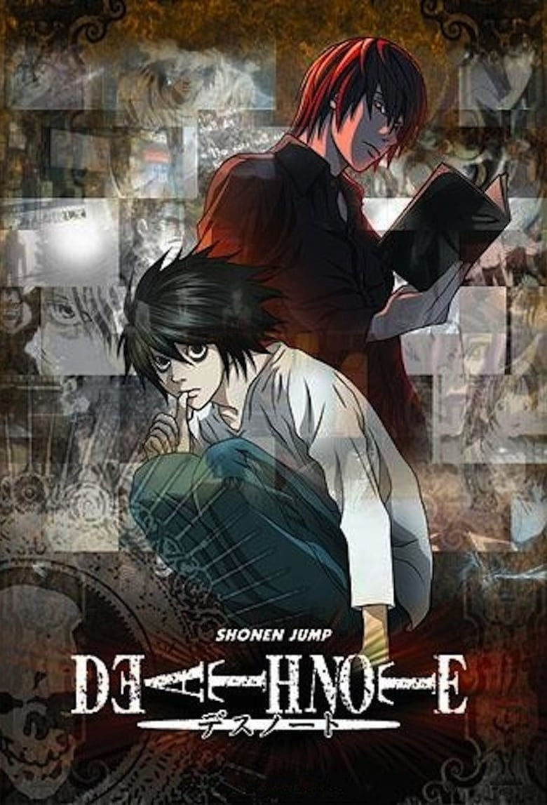

Токийский гуль
8,4
/10
10837
Кен Канеки - обычный студент, который в основном ведёт себя скромно и пытается найти любимую девушку. Однажды он знакомится с Ризе Камиширо, что приглашает его на свидание. После этого парень решает проводить красавицу до дома, и в тёмном переулке, девушк...
Read More

Клинок, рассекающий демонов
9,5
/10
32078
Эпоха «Тайсё» была полна неожиданностей. Много легенд нашли свое логическое подтверждение в те года. Люди давненько стали думать о присутствии демонов в гущах леса. И эти существа были крайне опасны и кровожадны. В ночное время суток они вели охоту на люд...
Read More
Невероятное приключение ДжоДжо
9,0
/10
6753
Во всех поколениях прекрасного рода Джостаров есть такой определенный потомок, чье имя начинается с того же слога, и у него появляется привычное в таких случаях прозвище – ДжоДжо. Начиная с непростого девятнадцатого столетия смыслом жизни этого парня стан...
Read More

Тетрадь смерти
8,6
/10
37654
Жить человеку или не жить определяют боги смерти, рано или поздно внося его имя в особую тетрадь. Одна из таких тетрадей попадает в мир людей на территорию современной Японии. А что случится, если тетрадь бога Death Note окажется в руках человека? Ответ о...
Read More
Токийские мстители
9,1
/10
20410
Двадцатишестилетний Такэмити Ханагаки — неудачник. Домовладелица ругается, управляющая на работе вечно придирается, даже маленькие дети задирают. В новостях он узнаёт о гибели девушки, с которой когда-то встречался. Попадает под поезд. Но это ещё не конец...
Read More
Магическая битва
9,4
/10
24308
Юдзи Итадори — сильный юноша, который ведёт заурядную жизнь старшеклассника. Однажды, чтобы спасти друзей от нападения проклятий, он съедает палец Двуликого призрака, который становится частью его души. С этого момента он делит с ним своё тело. Под присмо...
Read More
Семь смертных грехов
9,0
/10
6546
Земли старой Британии еще помнят древнее волшебство, в тайных местах порхают феи и водятся чудовища. Но в королевстве Лионесс главными чудищами считают Семь Смертных грехов – семерку великих воинов, что когда-то верно служили людям, а потом начали убивать...
Read More
Атака титанов
9,5
/10
21546
В прошлом столетии человечество страдало из-за нашествия гигантов. Они были очень похожи внешностью на простых людей, но также имели несколько отличий. Разница состояла в слишком больших размерах созданий и в их абсолютной глупости. Действовали великаны, ...
Read More